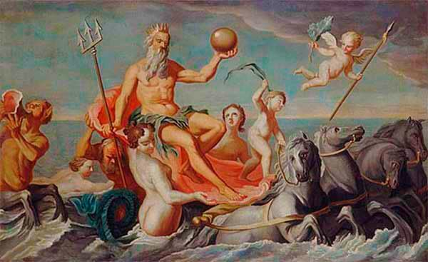
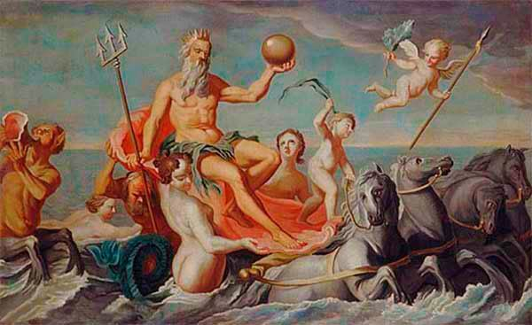
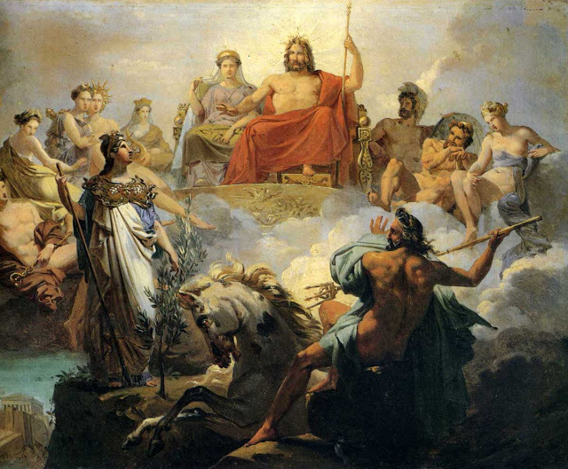

Poseidón
Introducción
Poseidón o Neptuno es uno de los principales dioses del panteón clásico. Junto a Zeus y Hades, Poseidón tomó parte en el reparto de las áreas de influencia de los dioses sobre el universo, correspondiéndole el gobierno de las aguas marinas y subterráneas. Poseidón es, por tanto, el señor de los mares y los océanos. Dada la importancia que el mar tuvo para la cultura griega, resulta comprensible que Poseidón fuese considerado como una de las divinidades más poderosas, a la que los hombres debían rendir culto si deseaban que sus viajes y empresas marineras tuvieran un final feliz.
 

Nacimiento
Poseidón es hijo de Crono y Rea. Crono, temeroso de correr la suerte que él mismo había dispensado a su propio progenitor, tomó la
decisión de ir devorando a todos sus hijos a medida que éstos iban naciendo, de modo que ninguno de ellos pudiera desafiarle y arrebatarle el poder una vez llegado a la edad
adulta. De este modo, el pequeño Hades fue engullido por el poderoso Cronos.

Sin embargo, Zeus, otro de los hijos de Crono y Rea, consiguió sobrevivir gracias a un engaño de
su madre, Rea, y al llegar a la edad adulta, desafió y derrotó a su padre, liberando a todos sus hermanos de las entrañas de Crono. De este modo, Hades quedó libre y se unió
a su hermano Zeus en su lucha contra los titanes para hacerse con el control del mundo, la guerra conocida como la Titanomaquia. El dios Hades poseía un arma única, forjada
por los cíclopes en las fraguas de las entrañas de la tierra: un casco de invisibilidad. Oculto gracias a los poderes de este artefacto, logró infligir grandes daños a sus
enemigos.Tras la victoria de Zeus, éste decidió repartir el universo con dos de sus hermanos. Eligió para sí mismo los cielos, mientras reservaba el gobierno de las aguas y
los océanos a Poseidón.
Algunos mitos
Las murallas de Troya
Como castigo por ofender a Zeus, Poseidón fue condenado junto a su sobrino Apolo a servir a Laomedonte, rey de Troya, en los servicios que éste requiriera. Laomedonte pidió a ambas divinidades que levantaran en su ciudad unas murallas colosales que ningún mortal fuera capaz de destruir. A cambio, les prometió una gran cantidad de recompensas y sacrificios en su honor. Una vez estuvo construida la muralla, Laomedonte se olvidó de cumplir su promesa, ignorando las amenazas de los dioses. Como castigo, Poseidón envió a Troya un monstruo marino que asoló sus costas durante años, hasta que Heracles le dio muerte.

Lucha por el Patronazgo de Atenas
A medida que la ciudad de Atenas se fue haciendo más poderosa, Poseidón y Atenea pusieron sus ojos en ella y desearon convertirse en el
patrón y protector de esta polis. Para dirimir el conflicto, ambos decidieron ofrecer a la ciudad un regalo, de forma que fueran los propios atenienses quienes decidieran acerca de
la cuestión. En presencia de Cécrope, rey de los atenienses, Poseidón golpeó el suelo con su tridente e hizo manar de la tierra una fuente de agua. Sin embargo, el poder de Poseidón
se limitaba a las aguas marinas, por lo que la fuente que hizo brotar era de agua salada.
Atenea a su vez, enseñó a Cécrope los secretos del cultivo del olivo, un árbol que ofrecía
a los atenienses tanto la posibilidad de alimentarse directamente con su fruto, las olivas, como la alternativa de su elaboración para producir aceite. Cécrope, entusiasmado ante
las posibilidades económicas del nuevo cultivo, otorgó la victoria a Atenea, que de este modo se convirtió en la protectora y la divinidad principal de la ciudad de Atenas. Poseidón,
enfurecido, hizo que la fuente que había manado bajo su tridente inundara una parte del Ática con sus aguas saladas.
No satisfecho con esta venganza, hizo que su hijo Eumolpo atacara
Atenas y acabara con la vida de Erecteo, sucesor de Cécrope. Pese a esta airada respuesta, los atenienses, un pueblo de vocación marinera, mantuvieron el culto a Poseidón durante toda
su historia, en enclaves como el cabo Sunion, donde aún hoy podemos contemplar el magnífico templo dedicado al dios de los océanos.